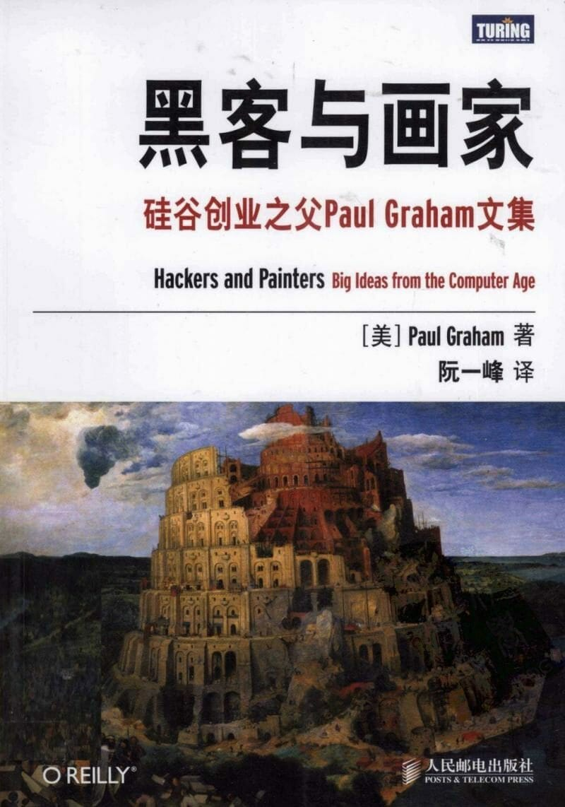

注：【】部分为笔者心得，非原文摘抄。
- 团队的领导者应该由最善于实现共同目标的人担任。
- 真正竞争软件设计的战场是新兴领域的市场，这里还没有人建立过防御工事。
- 优秀的软件也要求对美的狂热追求。
- 编程到底能够有多酷，取决于我们能够用这种新媒介做出怎样的工作。
- 优秀作品往往来自于其他人忽视的想法，而最被忽视的想法就是那些被禁止的思想观点。
- 很自负的人必须培养出敏锐的感觉，及时发现周围情势的变化，知道怎样才能脱身。
- 不要在半夜里发布软件，然后回家睡觉。
- 要让员工表现优秀，必须有竞争压力。
- 创业必须打破常规、快速行动，循规蹈矩不可能成功。
- 如果你是一个黑客，并且梦想自己创业，可能会有两件事情令你望而却步，不敢真正开始采取行动。一件是你不懂得管理企业，另一件是你害怕竞争。可是实际上，这两件事都是没有通电的电篱笆。
- 企业管理核心：做出用户喜欢的产品，保证开支小于收入。
- 不要只因为对方的头衔是市场专家、设计师或产品经理，就盲目听从他们的话。
- 创造有价值的也就是人们需要的东西便是创造财富。
- 最优秀的程序员都是自由主义者。
- 向下沉沦或者向上奋进都取决于你自己。
- 真正重要的是做出人们需要的东西，而不是加入某个公司。
- 要致富，你需要两样东西：可测量性和可放大性。
- 将自己的工作与其他高手的工作平均化要比与平庸之辈的工作平均话让人满意多了。
- 大多数时候，促成买方掏钱的最好办法不是让买家看到有获利的可能，而是让他们感到失去机会的恐惧。
- 用户数量就是判断公司表现好坏的指标。
- 只要懂得藏富于民，国家就会变得强大。
- 不仅应该技术过硬，还应当能够使用技术做出优美的产品。
- 设计产品时，我们需要良好的品味。
- 当你被迫把东西做得很简单时，你就被迫直接面对真正的问题；当你不能用表面的装饰交差时，你就不得不做好真正的本质部分。
- 推动人才涌现的最大因素就是，让有天赋的人聚在一起，共同解决某个难题。
- 优秀作品的秘诀就是：非常严格的品味，再加上实现这种品味的能力。
- 如果你长期使用某种语言，你就会慢慢按照这种语言的思维模式进行思考。
- 如果你为创业公司工作，那么有一个评估竞争对手的妙招——关注他们的招聘职位。
- 少于 10 个人的团队最适合开发软件。
- 如果你创业的话，千万不要为了取悦风险投资商或潜在并购方而设计你的产品，让用户感到满意才是你的设计方向。
- 一种出色的工具到了真正优秀的黑客手里，可以发挥出更大的威力。
- 优秀的设计不一定很“新”，但必须是“好”的；优秀的研究不一定很“好”，但必须是“新”的。
- 士气是设计的关键因素。
- 设计意味着做出符合目标用户特点和需要的产品。